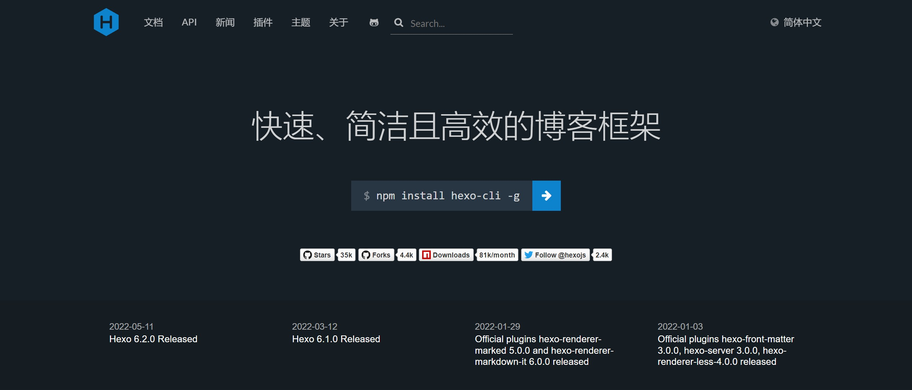

文章
11
标签
14
分类
4
Home
Archives
Tags
Categories
List
Music
Movie
Link
About
怪诞小镇
搜索
Home
Archives
Tags
Categories
List
Music
Movie
Link
About
版本更新日志
发表于
2022-08-09
|
更新于
2022-08-09
|
system
|
阅读量:
当前文章暂不对外可见，请输入密码后查看！
文章作者:
Bill Cypher
文章链接:
https://yu627482453.github.io/ban-ben-geng-xin-ri-zhi/
版权声明:
本博客所有文章除特别声明外，均采用
CC BY-NC-SA 4.0
许可协议。转载请注明来自
怪诞小镇
！
system
版本更新
private
打赏
wechat
alipay
上一篇
Java基础-索引

下一篇
02_hexo-个人博客-个性化-matery主题
评论
Bill Cypher
文章
11
标签
14
分类
4
Follow Me
公告
This is my Blog
目录
1.
版本更新日志
1.1.
Metadata
1.2.
更新日志
1.2.1.
2022-08-09
1.2.2.
2022-08-13
最新文章
tableau-图表
2022-08-13
tableau-数据源
2022-08-13
tableau-流程
2022-08-13
tableau-基本概念
2022-08-13
tableau-索引
2022-08-13
搜索
数据库加载中